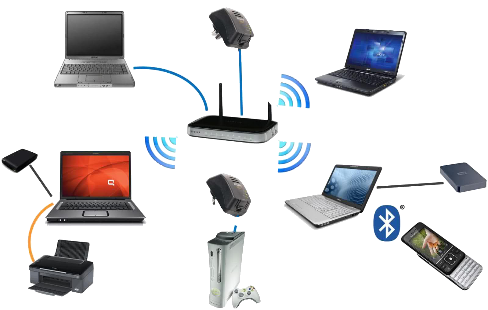

LAN(Local Area Network)Один из известнейших видов компьютерных сетей. Радиус охвата равен - 2 км, а скорость с которой передается информация может достигать до 10000 мб/с. Используя LAN преимущественно проектирую частные или корпоративные сети, потому что как правило сети типа LAN находятся в пределах одного здания. Использоваться данная сеть может для передачи информации, для объединения компьютерного, серверного и периферийного оборудования. Способы построения подразделяются на кабельное (Ethernet) или беспроводное подключение по Wi-Fi. Также используя сети LAN можно подключиться к интернету.
